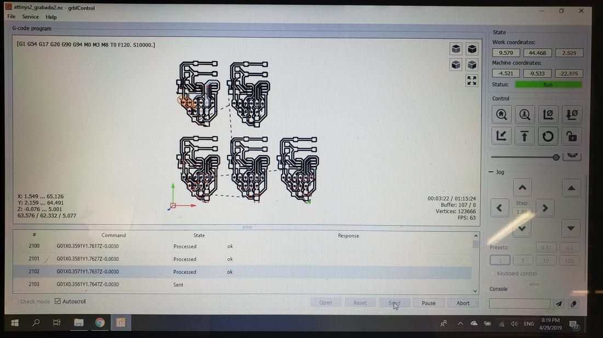

Communications //
For this assignment we had to design, build and connect several wireless or wireless nodes with network or bus addresses in order to create a network that would allow communication between different cards.
The communication protocols between processors can be of different types, for example the UART, SPI and I2C protocols.
UART
A universal asynchronous receiver/transmitter (UART) is a block of circuitry responsible for implementing serial communication. Essentially, the UART acts as an intermediary between parallel and serial interfaces. On one end of the UART is a bus of eight-or-so data lines (plus some control pins), on the other is the two serial wires - RX and TX.
SPI
The SPI Bus (Serial Peripheral Interface) is a communication standard, used mainly for the transfer of information between integrated circuits in electronic equipment. The Serial Peripheral Interface Bus or SPI bus is a standard for controlling almost any digital electronic device that accepts a serial bit stream regulated by a clock (synchronous communication).
I2C
The Inter-integrated Circuit (I2C) Protocol is a protocol intended to allow multiple "slave" digital integrated circuits ("chips") to communicate with one or more "master" chips. Like the Serial Peripheral Interface (SPI), it is only intended for short distance communications within a single device. Like Asynchronous Serial Interfaces (such as RS-232 or UARTs), it only requires two signal wires to exchange information.
Below I show a comparative table of these three protocols.
| - | UART | SPI | I2C |
|---|---|---|---|
| Designation of pines | TxD: Data transmission. RxD: Data reception. | SCLK: Serial Clock MOSI: Master output, slave input. MISO: Master input and slave output. SS: Slave selector. | SDA: Data SCL: Serial Clock |
| Data speed | The maximum communication can be between 230 Kbps to 460 Kbps | Normally supports between 10 Mbps to 20 Mbps | Up to 3.4 Mbps some variants can reach 1 Mbps |
| Distance | Less than 15 meters | It is designed for communications inside the board. | Same as the previous one, communications inside the board. |
| Communication type | Asynchronous | Synchronous | Synchronous |
| Hardware Complexity | Little bit | Half | High, according to the masters |
| Number of Masters | There are no masters | One | Many |
| Clock | Each device uses its internal one. | A clock signal between master and slave. | A common clock signal between multiple masters and slaves. |
| Protocol | 8 bits with one start bit and one stop bit. | Each company uses its own protocol. | Use a start bit and a stop bit, an acknowledgment bit (ACK) every 8 bits. |
| Software Addressing | Communication is between two devices, it is not necessary. | The SS (SS1, SS2 ...) is used to select which device, the more devices plus SS outputs we need. | All masters can communicate with all slaves, we can place 27 slaves and place the address in the I2C protocol. |
| Advantage | Very simple, allows to connect quickly two devices, usually used with RS232 or RS485 for example. |
|
|
| Disadvantages |
|
|
|
The network //
For the individual assignment I decided to use 2 communication protocols, the UART and the I2C.
The idea is to use the UART communication to connect the PC to the master card, and use the I2C communication to establish communication between the master card and 2 slave cards, with the purpose of being able to choose which to communicate by specifying which address to send the message. In this way I managed to create a network that merges 2 types of communications, UART and I2C.
For the group assignment, which was to send a message between 2 projects, I chose to work as a team with my partner Letty, however, we did not have the necessary cards to carry out this task, so we decided to generate a serial production of many cards, so we designed a card with the minimum necessary to make communications.
This helped us both for the group and individual assignment, for the lack of cards.
The idea to send a message from my computer to my partner's, was to join my network created with yours, through the UART protocol. The following image illustrate this idea.
In this practice we had an unfortunate problem, in order to make the proposed network we needed more cards, because, until now, the cards we had were insufficient. To solve this dilemma, I decided to design a replicable card to mass produce (so to speak), in this way I could fulfill individual and group practice by cutting several cards.
 19.26.06.png)
 19.26.16.png)
With this design, I joined several in Photoshop and then load them into fabmodules to generate the files to record and cut the pcb in the minimill.


Finally I soldered the components and tested the cards. It is worth mentioning that only the cards are designed and each one is in charge of welding and testing their cards.